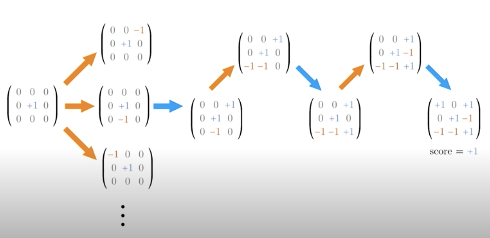
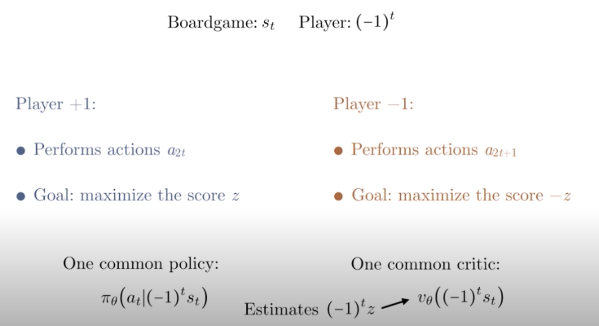
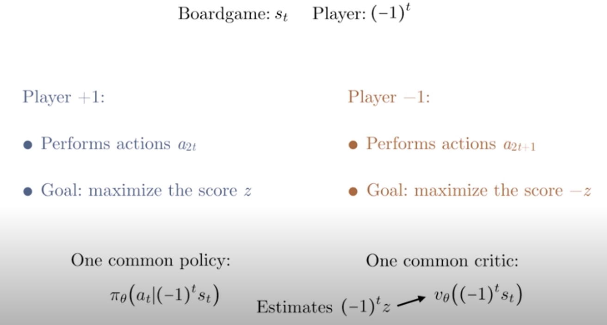
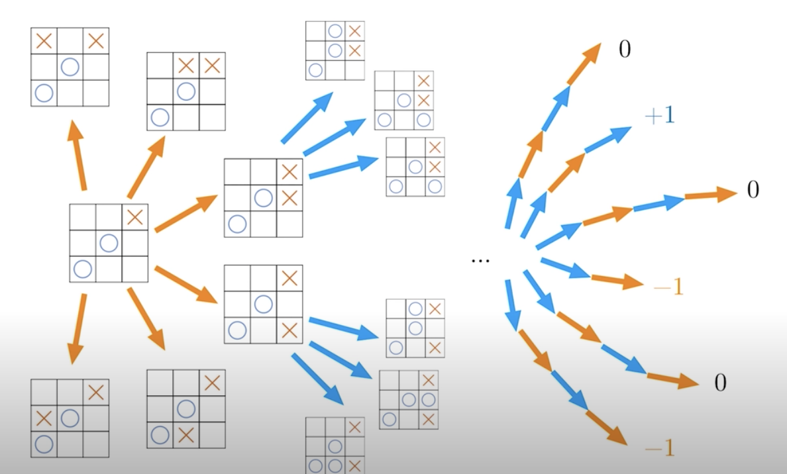
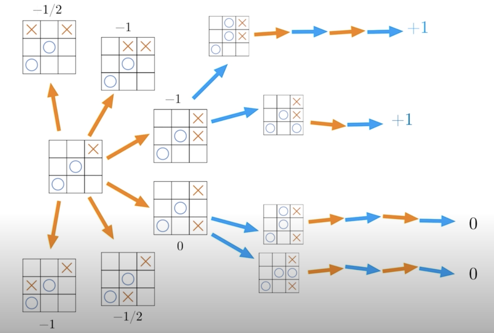
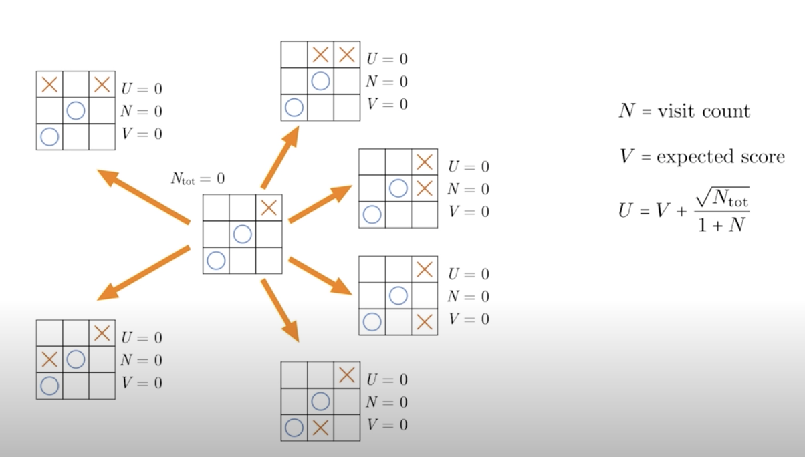
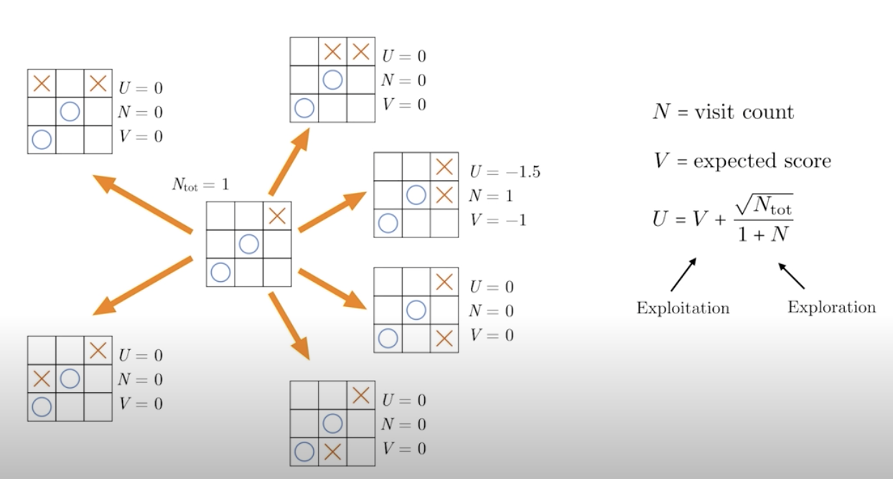
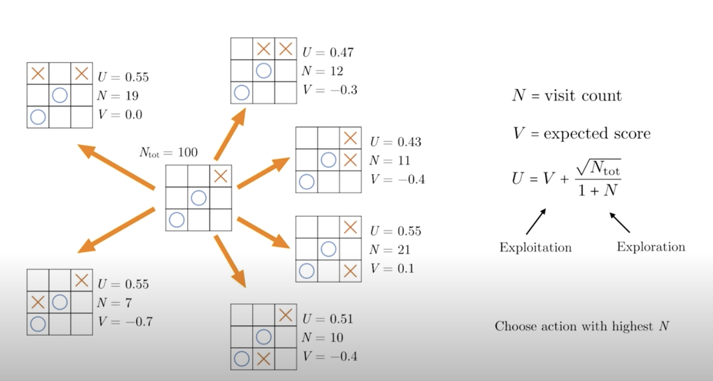

In 2016, researchers at DeepMind announced a new breakthrough -- the development of a new AI engine, alphago for the game of go.The AI was able to beat a professional player LeeSedol. The breakthrough was significant, because go was far more complex than chess: the number of possible games is so high, that a professional go engine was believed to be way out of reach at that point, and human intuition was believed to be a key component in professional play. Still, performance in alphago depends on expert input during the training step, and so the algorithm cannot be easily be transferred to other domains
This changed in 2017, when the team at DeepMind updated their algorithm, and developed a new engine called alphago zero. This time, instead of depending on expert gameplay for the training, alphago zero learned from playing against itself, only knowing the rules of the game. More impressively, the algorithm was generic enough to be adapted to chess and shogi (also known as japanese chess). This leads to an entirely new framework for developing AI engine, and the researchers called their algorithm, simply as the alphazero.
The best part of the alphazero algorithm is simplicity: it consists of a Monte Carlo tree search, guided by a deep neural network. This is analogous to the way humans think about board games -- where professional players employ hard calculations guides with intuitions.
In the following lesson, we will cover how the alphazero algorithm works, and implement it to play an advanced version of tic-tac-toe. So let’s get started!
(Much of the lesson material is derived from the original paper, for alphago zero, and alphazero by the researchers at DeepMind. I encourage you to visit links -- click on the words-- to check out those papers)
In order to talk aobut AlphaZero, we first need to formalize the concepts of games that AlphaZero specializes in, zero-sum games.
We start with a board game environment, a grid for example, then two competing agents takes turns to perform actions to try to win the game. In the end, one agent's win is another agent's loss. Usually, we also assumed that the game contains no hidden information, so there's no element of luck, and winning or losing is entirely determined by skill. This concept is applicable to games as simple as tic-tac-toe to more complicated games such as chess and Go.
Let's go back to our ic-tac-toe example. The goal is to get three in a row, so the first player might make a move, say at the center, then the second player makes a move. Now, there are usually multiple possibilities at each step. In this case, there are eight. Focusing on one of these possibilities, we might have a game sequence like below.

Now, in this case, the first player wins. We can represent all this information mathematically. The board can be represented by a matrix where 0 indicates empty space and +/-1 indicates the pieces of player one and two. Given that there are only circles and crosses in tic-tac-toe, each entry can then only be 0, +1, or -1.
We can also encode the final outcome by a score, where +1 indicates a win by the first player, and -1 indicates a win by the second player, and 0 indicates a draw. This way of representing the board is convenient because the board can easily be fed into a neural network.
Also, if you want to switch other players' pieces, we can just multiply the matrix by -1. We can also flip the score by multiplying it by -1. This property will come in handy when we build an agent to play the game.

Now that we've encoded the game mathematically, we can rephrase everything in the language of RL. We have a sequence of states for the board game denoted by s_t, and we have two players denoted by +/-1. Here, we've simplified the (-1)^t, assuming we start with t=0.
Player +1 performs actions at all the even timesteps and tried to maximize the final score +z. While player -1 performs actions at all the odd timesteps and tries to maximize -1 time the final score, -z.
Now, imagine we've constructed an intelligent agent who is able to play a perfect game as player +1, then is should be able to play a perfect game as player -1 as well. As long as we flipped the state, s_t, at all the odd timestep. Then we can have the agent play against itself with a common policy. Now, besides having a common policy, we can also have a common critic that can evaluate the expected outcome from the perspective of the current player.

This essentially estimates the expected value of {(1)^t} \times z. We will see later that this is basic idea behind AlphaZero, where we have one agent playing against itself along with one critic that self-improves as more and more games are played.
See the video here.
Given a state in a zero-sum game, how do we find an optimal policy?
In theory, this is simple, because we could just perform a brute force search, and going through all the possible moves and all the possible games that can be played, and then we can choose the ones with the best possible outcomes. The possibilities are numerous.

We already see that in practice, this brute force method can become infeasible. Even for tic-tac-toe, things are complicated, as there are nine possible first moves, eigt possible second moves, and so forth. Can we do better?
One possibility is that we can randomly sample a subset of all the possible games. Then for each action, we can compute the expected outcome by taking the average of all the subsequent play outs like below.

For convenience we also add an extra negative sign, so that the expected outcome is from the perspective of the current player. Then we would choose the action with the largest expected score, in this case who plays across at the bottom corner. This procedure sounds a little bit familiar. Trying to compute the expected outcome is analogous to estimating Q function, and we know that a completely random search isn't ideal. It would be better to have some guidance. So, we can better balance random explorations with exploitations.
Let's get systemic then, and look at all the possible moves player two can take given the current state. There are six possibilities. We can think of all the possibilities as part of a tree structure. The goal is we want to look at each branch of this tree and focus most of the random play outs on the actions that are more promising as opposed to just sample completely randomly.
To do this we define three numbers for each branch of this tree: U, N, and V. All the values are initialized to zero. N is the number of times I've played a random game starting from that branch, and V is an estimate of the expected outcome starting from that branch and from the perspective of the current player. The variable U is computed from V and N given by the formula on the right.

In each iteration I need to choose to play a random game starting from a selective branch. This is where the variable U comes in. The branch with the highest value of U will be chosen. This U function contains two pieces. The first one is V. So when the current expected outcome is large, U will be large, and this helps exploitation.
Meanwhile the second piece is inversely proportional to 1+N. So, it encourages visits to branches with low visit counts, and this helps with exploration. Now that we have defined all the variables, let's see how a search may play out in action. Initially, all the U's are zero, so we just randomly choose one of the six possible actions.
Now, we play a random game, and this time player two lost. So, V is updated to be -1, and the number of visit increased to 1. Before we start the next gameplay, notice that the total number of gameplay is now 1. So, the exploration part of the U function needs to be updated for all the other branches, like below.

The largest U is now one, so going to the next iteration of gameplay, we need to choose one of the other five actions. We can then repeat this procedure until a fixed number of total gameplays, say 100 games is reached, and we might end up with something like this. How do we decide what the next move is that?
We could choose the action with the highest U or V, but sometimes they might not be that reliable, especially if the visit counts are low. So instead, we choose an action with the highest visits counts, which is usually associated with good expected outcome anyway, and it's a little bit more reliable. In this case the highest visit count is 21, and this is the move that we will choose according to the tree search.

See the video here.
Starting with state, we learned previously how to search systematically through one layer of a game tree using the variables U, N, and V. Can we generalize this to go deeper into the tree so that we can better anticipate a long sequence of moves?
This is possible through what's called expansion and backpropagation. Let's see how it works in action.
See the video for explanation.
Watch the video here.
Watch the video here.
Watch the following videos:
Watch the video here.